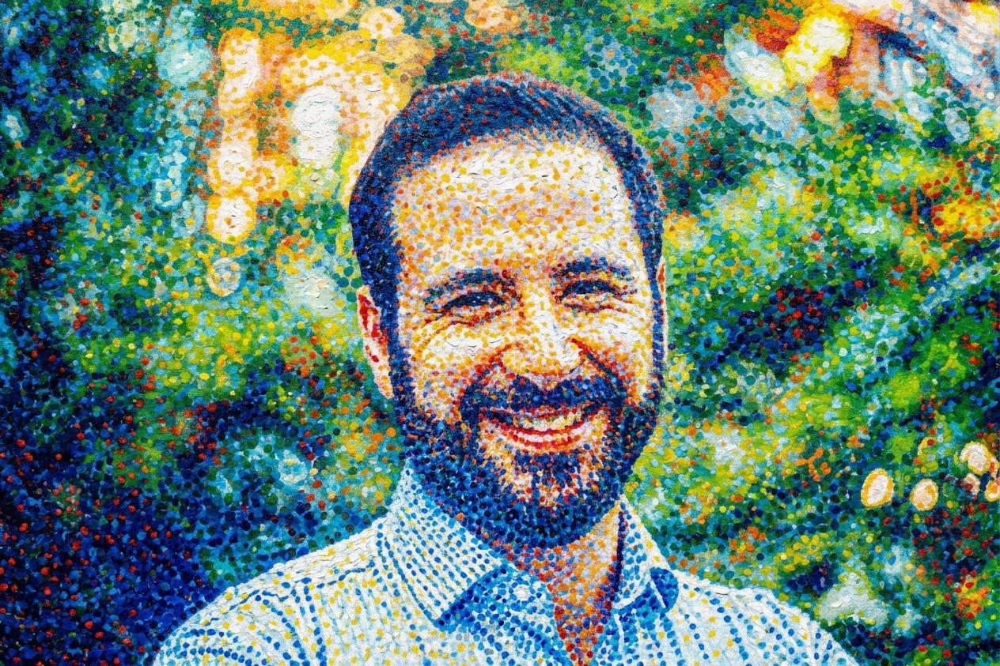

Yariv Barsheshat
AI safety researcher · software engineer · former mathematician
I trained as a mathematician and taught calculus for seven years before moving into industry to build real-time computer vision systems and applied LLM products. I'm now an independent AI safety researcher, funded by a grant from Coefficient Giving, investigating variations of emergent misalignment. Our first paper, Innocuous-Seeming Data, Latent Ideology: Ideological Generalisation in Finetuned LLMs (with Robert Graham and Edward Stevinson), has been accepted to two ICML 2026 workshops, AI4GOOD and Pluralistic Alignment, and is under review at NeurIPS 2026.
Experience
- Apr 2026 – present
-
Independent AI safety researcher Coefficient Giving (grantee)
Investigating variations of emergent misalignment in large language models. First paper, co-authored with Robert Graham and Edward Stevinson, accepted to two ICML 2026 workshops (AI4GOOD and Pluralistic Alignment) and under review at NeurIPS 2026.
- Jan – Apr 2026
-
AI full-stack engineer Explorai
Contributed across the full stack to Estimai, a SaaS that lets construction estimators generate bids by ingesting architectural plans and tender documents with AI-driven analysis. Built the proof-of-concept for vectorial column detection across multi-page floor plans.
- Aug 2022 – Jan 2026
-
Senior R&D programmer mtl.ai
Trained and deployed real-time computer vision models for live soccer broadcasts (UEFA Euro 2024, Champions League). Built a unified API layer over frontier LLMs powering an assistant app for online marketplace sellers.
- Jun 2015 – Jul 2022
-
Mathematics professor Dawson College
Taught calculus, linear algebra, statistics, and probability; developed course materials adopted department-wide. Executive on the Teachers' Union and the Science Program Committee.
Education
- 2013 – 2015
-
MSc Mathematics McGill University
Thesis: Entropy in Dynamical Systems. Shortlisted for top master's thesis in mathematics.
- 2009 – 2012
-
BSc Joint Honours, Mathematics & Physics McGill University
Dean's Honour List, GPA 3.91.